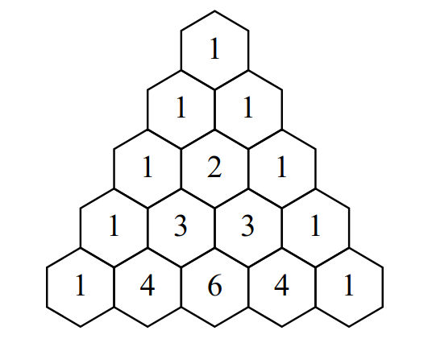
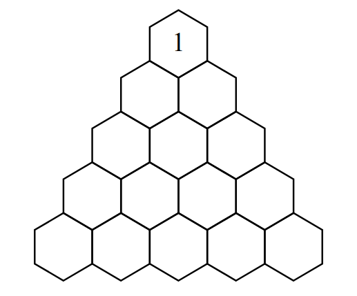
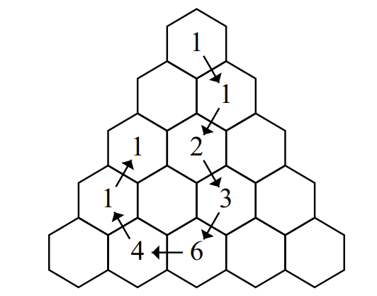

Code Jam 2020 - Round 1A
Pascal Walk
Problem
Pascal's triangle consists of an infinite number of rows of an increasing number of integers each, arranged in a triangular shape.
Let us define (r, k) as the k-th position from the left in the r-th row, with both r and k counted starting from 1. Then Pascal's triangle is defined by the following rules:
- The r-th row contains r positions (r, 1), (r, 2), ..., (r, r).
- The numbers at positions (r, 1) and (r, r) are 1, for all r.
- The number at position (r, k) is the sum of the numbers at positions (r - 1, k - 1) and (r - 1, k), for all k with 2 ≤ k ≤ r - 1.
The first 5 rows of Pascal's triangle look like this:

In this problem, a Pascal walk is a sequence of s positions (r1, k1), (r2, k2), ..., (rs, ks) in Pascal's triangle that satisfy the following criteria:
- r1 = 1 and k1 = 1.
- Each subsequent position must be within the triangle and adjacent (in one of the six possible directions) to the previous position. That is, for all i ≥ 1, (ri + 1, ki + 1) must be one of the following that is within the triangle: (ri - 1, ki - 1), (ri - 1, ki), (ri, ki - 1), (ri, ki + 1), (ri + 1, ki), (ri + 1, ki + 1).
- No position may be repeated within the sequence. That is, for every i ≠ j, either ri ≠ rj or ki ≠ kj, or both.
Find any Pascal walk of S ≤ 500 positions such that the sum of the numbers in all of the positions it visits is equal to N. It is guaranteed that at least one such walk exists for every N.
Input
The first line of the input gives the number of test cases, T. T test cases follow. Each consists of a single line containing a single integer N.
Output
For each test case, first output a line containing Case #x:,
where x is the test case number (starting from 1). Then, output
your proposed Pascal walk of length S ≤ 500 using S additional lines. The i-th of
these lines must be ri ki where
(ri, ki) is the i-th position in the walk. For example, the first line
should be 1 1 since the first position for all valid walks is (1, 1).
The sum of the numbers at the S positions of your proposed Pascal walk must be exactly N.
Limits
Time limit: 20 seconds per test set.
Memory limit: 1GB.
1 ≤ T ≤ 100.
Test set 1 (Visible Verdict)
1 ≤ N ≤ 501.
Test set 2 (Visible Verdict)
1 ≤ N ≤ 1000.
Test set 3 (Hidden Verdict)
1 ≤ N ≤ 109.
Sample
3 1 4 19
Case #1: 1 1 Case #2: 1 1 2 1 2 2 3 3 Case #3: 1 1 2 2 3 2 4 3 5 3 5 2 4 1 3 1
In Sample Case #1, only the starting position is needed.

In Sample Case #2, notice that although a shorter path exists, the path does not need to be of minimal length, as long as it uses no more than 500 positions.

The following image depicts our solution to Sample Case #3:
